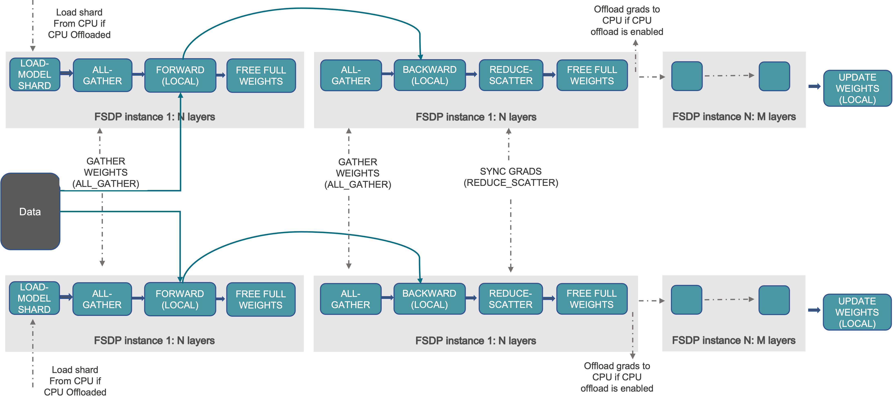
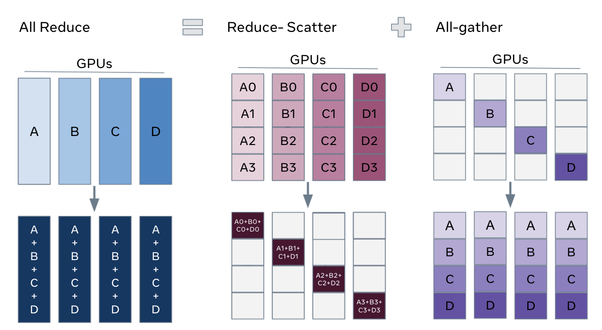
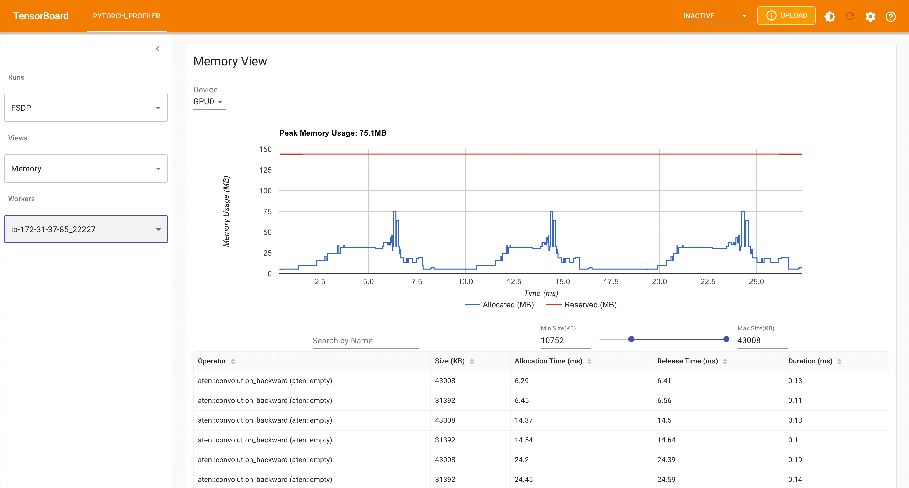
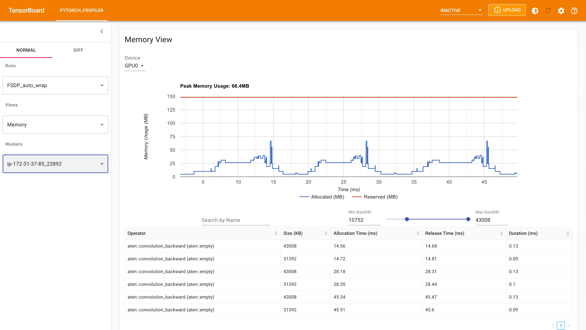
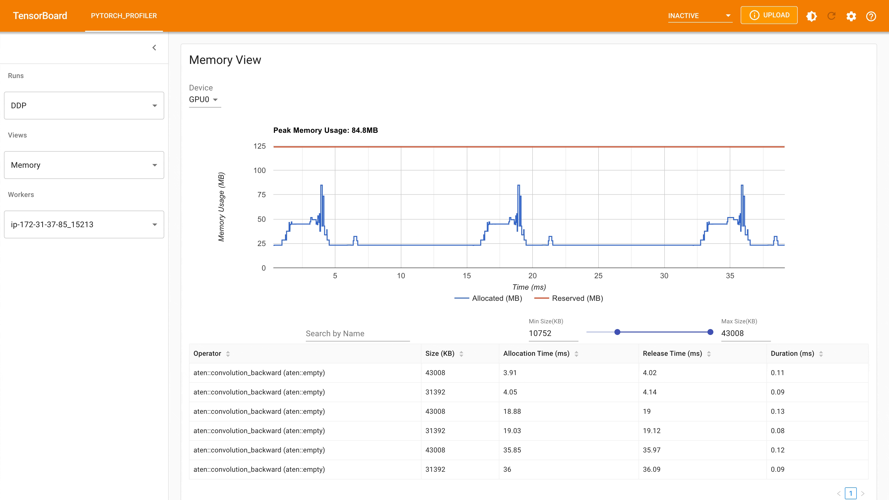

使用完全分片数据并行（FSDP）入门 ¶
创建时间：2025年4月1日 | 最后更新时间：2025年4月1日 | 最后验证时间：2024年11月5日
作者 : Hamid Shojanazeri, Yanli Zhao, Shen Li
备注
 在 github 中查看和编辑此教程。
在 github 中查看和编辑此教程。
在大规模训练 AI 模型是一项具有挑战性的任务，需要大量的计算能力和资源。
它也带来了相当大的工程复杂性，以处理这些非常大的模型的训练。
PyTorch FSDP，在 PyTorch 1.11 版本中发布，使得这更加容易。
在本教程中，我们展示了如何使用 FSDP API，用于简单的 MNIST 模型，这些模型可以扩展到其他更大的模型，例如 HuggingFace BERT 模型 ，
参数高达 1T 的 GPT 3 模型 。以下 DDP MNIST 代码示例由 Patrick Hu 提供。
FSDP 是如何工作的 ¶
在分布式数据并行 （DDP）训练中，每个进程/工作者拥有模型的一个副本并处理一批数据，最后它使用 all-reduce 将不同工作者之间的梯度求和。在 DDP 中，模型权重和优化器状态会在所有工作者之间复制。FSDP 是一种数据并行技术，它将模型参数、优化器状态和梯度在 DDP 等级之间分片。
使用 FSDP 进行训练时，与所有工作者使用 DDP 训练相比，GPU 内存占用更小。这使得一些非常大的模型的训练成为可能，通过允许更大的模型或批量大小适应设备。这伴随着通信量增加的代价。通过内部优化，如重叠通信和计算，减少了通信开销。
{kind=link}

FSDP 工作流程 ¶
从宏观层面来看，FSDP 的工作原理如下：
在构造函数中
分片模型参数，每个 rank 只保留自己的分片
在前向路径中
执行 all_gather 以收集所有 ranks 的所有 shards，以恢复此 FSDP 单元的完整参数
运行前向计算
丢弃它刚刚收集的参数分片
在反向路径中
运行 all_gather 以收集所有 rank 的所有分片，以恢复此 FSDP 单元中的完整参数
运行反向计算
运行 reduce_scatter 以同步梯度
丢弃参数。
观看 FSDP 分片的一种方式是将 DDP 梯度全量归约分解为 reduce-scatter 和 all-gather。具体来说，在反向传播过程中，FSDP 对梯度进行归约和散射，确保每个 rank 拥有梯度的一部分。然后，在优化器步骤中更新相应的参数分片。最后，在随后的正向传播中，它执行全量收集操作以收集和组合更新的参数分片。
{kind=link}

FSDP Allreduce¶
如何使用 FSDP¶
在这里，我们使用一个玩具模型在 MNIST 数据集上运行训练，以进行演示。这些 API 和逻辑同样适用于训练更大的模型。
设置
1.1 安装 PyTorch 和 Torchvision
请参阅入门指南获取有关安装的信息。
我们将以下代码片段添加到 Python 脚本“FSDP_mnist.py”中。
1.2 导入必要的包
备注
本教程适用于 PyTorch 1.12 及更高版本。如果您使用的是更早的版本，请将所有 size_based_auto_wrap_policy 实例替换为 default_auto_wrap_policy，将 fsdp_auto_wrap_policy 替换为 auto_wrap_policy。
# Based on: https://github.com/pytorch/examples/blob/master/mnist/main.py
import os
import argparse
import functools
import torch
import torch.nn as nn
import torch.nn.functional as F
import torch.optim as optim
from torchvision import datasets, transforms
from torch.optim.lr_scheduler import StepLR
import torch.distributed as dist
import torch.multiprocessing as mp
from torch.nn.parallel import DistributedDataParallel as DDP
from torch.utils.data.distributed import DistributedSampler
from torch.distributed.fsdp import FullyShardedDataParallel as FSDP
from torch.distributed.fsdp.fully_sharded_data_parallel import (
CPUOffload,
BackwardPrefetch,
)
from torch.distributed.fsdp.wrap import (
size_based_auto_wrap_policy,
enable_wrap,
wrap,
)
1.3 分布式训练设置。正如我们提到的，FSDP 是一种数据并行技术，它需要一个分布式训练环境，因此在这里我们使用两个辅助函数来初始化分布式训练进程并清理。
def setup(rank, world_size):
os.environ['MASTER_ADDR'] = 'localhost'
os.environ['MASTER_PORT'] = '12355'
# initialize the process group
dist.init_process_group("nccl", rank=rank, world_size=world_size)
def cleanup():
dist.destroy_process_group()
2.1 定义我们的玩具模型用于手写数字分类。
class Net(nn.Module):
def __init__(self):
super(Net, self).__init__()
self.conv1 = nn.Conv2d(1, 32, 3, 1)
self.conv2 = nn.Conv2d(32, 64, 3, 1)
self.dropout1 = nn.Dropout(0.25)
self.dropout2 = nn.Dropout(0.5)
self.fc1 = nn.Linear(9216, 128)
self.fc2 = nn.Linear(128, 10)
def forward(self, x):
x = self.conv1(x)
x = F.relu(x)
x = self.conv2(x)
x = F.relu(x)
x = F.max_pool2d(x, 2)
x = self.dropout1(x)
x = torch.flatten(x, 1)
x = self.fc1(x)
x = F.relu(x)
x = self.dropout2(x)
x = self.fc2(x)
output = F.log_softmax(x, dim=1)
return output
2.2 定义训练函数
def train(args, model, rank, world_size, train_loader, optimizer, epoch, sampler=None):
model.train()
ddp_loss = torch.zeros(2).to(rank)
if sampler:
sampler.set_epoch(epoch)
for batch_idx, (data, target) in enumerate(train_loader):
data, target = data.to(rank), target.to(rank)
optimizer.zero_grad()
output = model(data)
loss = F.nll_loss(output, target, reduction='sum')
loss.backward()
optimizer.step()
ddp_loss[0] += loss.item()
ddp_loss[1] += len(data)
dist.all_reduce(ddp_loss, op=dist.ReduceOp.SUM)
if rank == 0:
print('Train Epoch: {} \tLoss: {:.6f}'.format(epoch, ddp_loss[0] / ddp_loss[1]))
2.3 定义验证函数
def test(model, rank, world_size, test_loader):
model.eval()
correct = 0
ddp_loss = torch.zeros(3).to(rank)
with torch.no_grad():
for data, target in test_loader:
data, target = data.to(rank), target.to(rank)
output = model(data)
ddp_loss[0] += F.nll_loss(output, target, reduction='sum').item() # sum up batch loss
pred = output.argmax(dim=1, keepdim=True) # get the index of the max log-probability
ddp_loss[1] += pred.eq(target.view_as(pred)).sum().item()
ddp_loss[2] += len(data)
dist.all_reduce(ddp_loss, op=dist.ReduceOp.SUM)
if rank == 0:
test_loss = ddp_loss[0] / ddp_loss[2]
print('Test set: Average loss: {:.4f}, Accuracy: {}/{} ({:.2f}%)\n'.format(
test_loss, int(ddp_loss[1]), int(ddp_loss[2]),
100. * ddp_loss[1] / ddp_loss[2]))
2.4 定义一个分布式训练函数，该函数使用 FSDP 包装模型
注意：要保存 FSDP 模型，我们需要在每个 rank 上调用 state_dict，然后在 Rank 0 上保存整体状态。
def fsdp_main(rank, world_size, args):
setup(rank, world_size)
transform=transforms.Compose([
transforms.ToTensor(),
transforms.Normalize((0.1307,), (0.3081,))
])
dataset1 = datasets.MNIST('../data', train=True, download=True,
transform=transform)
dataset2 = datasets.MNIST('../data', train=False,
transform=transform)
sampler1 = DistributedSampler(dataset1, rank=rank, num_replicas=world_size, shuffle=True)
sampler2 = DistributedSampler(dataset2, rank=rank, num_replicas=world_size)
train_kwargs = {'batch_size': args.batch_size, 'sampler': sampler1}
test_kwargs = {'batch_size': args.test_batch_size, 'sampler': sampler2}
cuda_kwargs = {'num_workers': 2,
'pin_memory': True,
'shuffle': False}
train_kwargs.update(cuda_kwargs)
test_kwargs.update(cuda_kwargs)
train_loader = torch.utils.data.DataLoader(dataset1,**train_kwargs)
test_loader = torch.utils.data.DataLoader(dataset2, **test_kwargs)
my_auto_wrap_policy = functools.partial(
size_based_auto_wrap_policy, min_num_params=100
)
torch.cuda.set_device(rank)
init_start_event = torch.cuda.Event(enable_timing=True)
init_end_event = torch.cuda.Event(enable_timing=True)
model = Net().to(rank)
model = FSDP(model)
optimizer = optim.Adadelta(model.parameters(), lr=args.lr)
scheduler = StepLR(optimizer, step_size=1, gamma=args.gamma)
init_start_event.record()
for epoch in range(1, args.epochs + 1):
train(args, model, rank, world_size, train_loader, optimizer, epoch, sampler=sampler1)
test(model, rank, world_size, test_loader)
scheduler.step()
init_end_event.record()
if rank == 0:
init_end_event.synchronize()
print(f"CUDA event elapsed time: {init_start_event.elapsed_time(init_end_event) / 1000}sec")
print(f"{model}")
if args.save_model:
# use a barrier to make sure training is done on all ranks
dist.barrier()
states = model.state_dict()
if rank == 0:
torch.save(states, "mnist_cnn.pt")
cleanup()
2.5 最后，解析参数并设置主函数
if __name__ == '__main__':
# Training settings
parser = argparse.ArgumentParser(description='PyTorch MNIST Example')
parser.add_argument('--batch-size', type=int, default=64, metavar='N',
help='input batch size for training (default: 64)')
parser.add_argument('--test-batch-size', type=int, default=1000, metavar='N',
help='input batch size for testing (default: 1000)')
parser.add_argument('--epochs', type=int, default=10, metavar='N',
help='number of epochs to train (default: 14)')
parser.add_argument('--lr', type=float, default=1.0, metavar='LR',
help='learning rate (default: 1.0)')
parser.add_argument('--gamma', type=float, default=0.7, metavar='M',
help='Learning rate step gamma (default: 0.7)')
parser.add_argument('--no-cuda', action='store_true', default=False,
help='disables CUDA training')
parser.add_argument('--seed', type=int, default=1, metavar='S',
help='random seed (default: 1)')
parser.add_argument('--save-model', action='store_true', default=False,
help='For Saving the current Model')
args = parser.parse_args()
torch.manual_seed(args.seed)
WORLD_SIZE = torch.cuda.device_count()
mp.spawn(fsdp_main,
args=(WORLD_SIZE, args),
nprocs=WORLD_SIZE,
join=True)
我们已经记录了 cuda 事件来测量 FSDP 模型特定的时间。CUDA 事件时间为 110.85 秒。
python FSDP_mnist.py
CUDA event elapsed time on training loop 40.67462890625sec
使用 FSDP 包装模型后，模型将如下所示，我们可以看到模型已经被包装在一个 FSDP 单元中。接下来，我们将探讨添加 auto_wrap_policy，并讨论其差异。
FullyShardedDataParallel(
(_fsdp_wrapped_module): FlattenParamsWrapper(
(_fpw_module): Net(
(conv1): Conv2d(1, 32, kernel_size=(3, 3), stride=(1, 1))
(conv2): Conv2d(32, 64, kernel_size=(3, 3), stride=(1, 1))
(dropout1): Dropout(p=0.25, inplace=False)
(dropout2): Dropout(p=0.5, inplace=False)
(fc1): Linear(in_features=9216, out_features=128, bias=True)
(fc2): Linear(in_features=128, out_features=10, bias=True)
)
)
)
以下是从 AWS EC2 g4dn.12.xlarge 实例上的 FSDP MNIST 训练中捕获的峰值内存使用情况。
{kind=link}

FSDP 峰值内存使用 ¶
在 FSDP 中应用 auto_wrap_policy，否则 FSDP 将整个模型放入一个 FSDP 单元中，这将降低计算效率和内存效率。其工作方式是，假设您的模型包含 100 个线性层。如果您对 FSDP(model) 进行操作，将只有一个 FSDP 单元将整个模型包装起来。在这种情况下，allgather 将收集所有 100 个线性层的完整参数，因此不会节省 CUDA 内存进行参数分片。此外，对于所有 100 个线性层，只有一个阻塞 allgather 调用，层之间不会有通信和计算重叠。
为了避免这种情况，您可以传递一个 auto_wrap_policy，当满足指定条件（例如大小限制）时，它将自动密封当前的 FSDP 单元并启动一个新的单元。这样，您将拥有多个 FSDP 单元，每次只需要一个 FSDP 单元收集全部参数。例如，假设您有 5 个 FSDP 单元，每个单元封装 20 个线性层。那么，在正向传播中，第 1 个 FSDP 单元将收集前 20 个线性层的参数，进行计算，丢弃参数，然后继续下一个 20 个线性层。因此，在任何时候，每个进程组只需实例化 20 个线性层的参数/梯度，而不是 100 个。
在 2.4 版本中，我们定义了 auto_wrap_policy 并将其传递给 FSDP 包装器，以下示例中，my_auto_wrap_policy 定义了如果该层的参数数量大于 100，则该层可以被 FSDP 包装或分片。如果该层的参数数量小于 100，它将与其他小型层一起被 FSDP 包装。找到一个最优的 auto wrap 策略是具有挑战性的，PyTorch 将在未来为这个配置添加自动调整。在没有自动调整工具的情况下，最好通过实验性地使用不同的 auto wrap 策略来分析您的流程，并找到最优的一个。
my_auto_wrap_policy = functools.partial(
size_based_auto_wrap_policy, min_num_params=20000
)
torch.cuda.set_device(rank)
model = Net().to(rank)
model = FSDP(model,
auto_wrap_policy=my_auto_wrap_policy)
应用 auto_wrap_policy 后，模型如下所示：
FullyShardedDataParallel(
(_fsdp_wrapped_module): FlattenParamsWrapper(
(_fpw_module): Net(
(conv1): Conv2d(1, 32, kernel_size=(3, 3), stride=(1, 1))
(conv2): Conv2d(32, 64, kernel_size=(3, 3), stride=(1, 1))
(dropout1): Dropout(p=0.25, inplace=False)
(dropout2): Dropout(p=0.5, inplace=False)
(fc1): FullyShardedDataParallel(
(_fsdp_wrapped_module): FlattenParamsWrapper(
(_fpw_module): Linear(in_features=9216, out_features=128, bias=True)
)
)
(fc2): Linear(in_features=128, out_features=10, bias=True)
)
)
python FSDP_mnist.py
CUDA event elapsed time on training loop 41.89130859375sec
以下是在 g4dn.12.xlarge AWS EC2 实例上使用 4 个 GPU 进行 MNIST 训练时，采用 auto_wrap 策略的 FSDP 的峰值内存使用情况。从 PyTorch Profiler 捕获的数据表明，与未应用 auto wrap 策略的 FSDP 相比，每个设备的峰值内存使用量更小，从约 75 MB 降至 66 MB。
{kind=link}

FSDP 使用 Auto_wrap 策略的峰值内存使用情况 ¶
CPU 卸载 ：如果模型非常大，即使使用 FSDP 也无法放入 GPU，那么 CPU 卸载在这里可能会有所帮助。
目前，仅支持参数和梯度 CPU 卸载。可以通过传递 cpu_offload=CPUOffload(offload_params=True)来启用。
注意，目前这会隐式地启用梯度卸载到 CPU，以便参数和梯度可以在同一设备上工作，与优化器配合。此 API 可能会更改。默认值为 None，此时将不会进行卸载。
使用此功能可能会显著减慢训练速度，因为需要频繁地将张量从主机复制到设备，但它可能有助于提高内存效率并训练更大规模的模型。
在 2.4 版本中，我们只是将其添加到 FSDP 包装器中
model = FSDP(model,
auto_wrap_policy=my_auto_wrap_policy,
cpu_offload=CPUOffload(offload_params=True))
与 DDP 进行比较，如果在 2.4 版本中我们只是正常地将模型包装在 DPP 中，并在“DDP_mnist.py”中保存更改。
model = Net().to(rank)
model = DDP(model)
python DDP_mnist.py
CUDA event elapsed time on training loop 39.77766015625sec
以下是在 g4dn.12.xlarge AWS EC2 实例上使用 4 个 GPU 进行的 DDP MNIST 训练的峰值内存使用情况，由 PyTorch 分析器捕获。
{kind=link}

使用 Auto_wrap 策略的 DDP 峰值内存使用情况 ¶
考虑到我们在这里定义的玩具示例和微小的 MNIST 模型，我们可以观察到 DDP 和 FSDP 的峰值内存使用差异。在 DDP 中，每个进程都持有模型的一个副本，因此与 FSDP 相比，内存占用更高，FSDP 将模型参数、优化器状态和梯度分片到 DDP 进程。使用 FSDP 和 auto_wrap 策略的峰值内存使用量最低，其次是 FSDP 和 DDP。
此外，从时间来看，考虑到小型模型并在单台机器上运行训练，带有和不带有 auto_wrap 策略的 FSDP 与 DDP 几乎一样快。这个例子并不代表大多数实际应用，有关 DDP 和 FSDP 的详细分析和比较，请参阅这篇博客文章 。